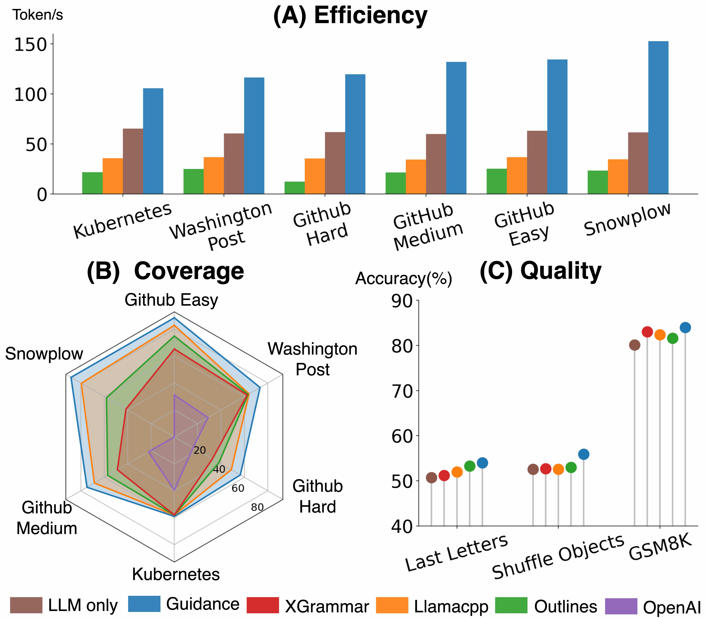

Language · Structured output
Structured JSON with LoRA
Adapt a language model to produce valid JSON that obeys a supplied schema.

What you’ll build
Train on validated prompt/schema/answer examples and test whether freely generated outputs satisfy unseen schemas.
Model and adaptation
Qwen2.5-Coder-1.5B-Instruct with LoRA; free generation makes the effect of training measurable.
Schema adherence and task correctness are separate: a valid object can still contain the wrong answer. Constrained decoding is an optional comparison; the course baseline evaluates the learned model's unconstrained outputs.
Data
Training
Curated prompt, JSON Schema and valid answer triples. Group related schemas before creating train and validation splits.
Evaluation
Held-out schema families and a documented JSONSchemaBench subset. JSONSchemaBench provides schemas, not ready-made supervised answers.
How to measure success
- Schema adherence ↑
- Fraction of all outputs that pass the supplied JSON Schema.
- Valid JSON ↑
- Strictly parseable JSON without Markdown wrappers or invalid values.
- Exact match ↑
- Canonical JSON equality where a reference answer exists.
- Capability retention
- Optional before/after comparison on a fixed general-task evaluation set.
What to submit
- A reloadable LoRA adapter and validated training data.
- An evaluator for syntax, schema adherence and reference answers.
- A comparison with the base model on unseen schemas.
- An error gallery for nested objects, arrays and required fields.